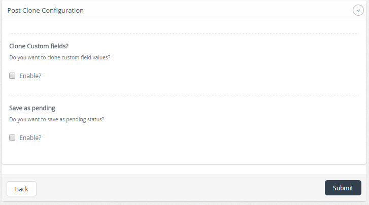

| Description |
|---|
| Post Clone Plugin allows cloning a post or edit it as a new post, this plugin allows cloning of a post custom fields, plus save it as pending. |
| Configuration | |
|---|---|
| After activating the plugin, select the link "Settings/Configuración" to edit the characteristics of the plugin. | |
|  | |